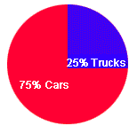

WAI-ARIA describedby examples
Various images that have a describedby property.
How to reproduce
- Read with the jaws virtual cursor.
Expected result
- jaws should read the describedby text (even when it's hidden).
Example 1: description visibility:hidden;

This is a description (1) of an image.
Example 2: description display="none"
This is a description (2) of an image.
Example 3: description always visible
This is a long description (2) of an image.